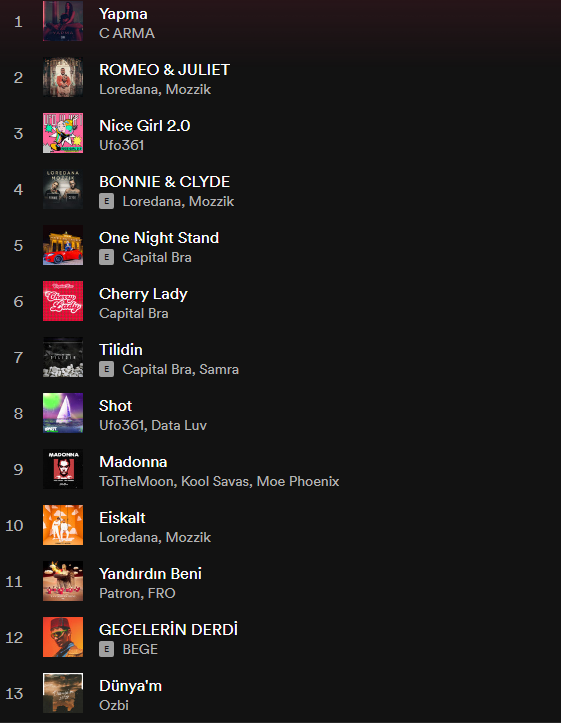
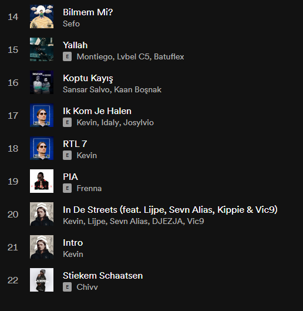

Hip-Hop
Hip hop is my favorite genre, it make me hype. When I do chores at home, drive a car hip hop is playing on my phone. I listen hiphop song in other languages; German, Dutch, and Turkish. My favorite hip hop songs are:
 
What is Hip-hop?
Hip-hop, cultural movement that attained widespread popularity in the 1980s and ’90s; also, the backing music for rap, the musical style incorporating rhythmic and/or rhyming speech that became the movement’s most lasting and influential art form.